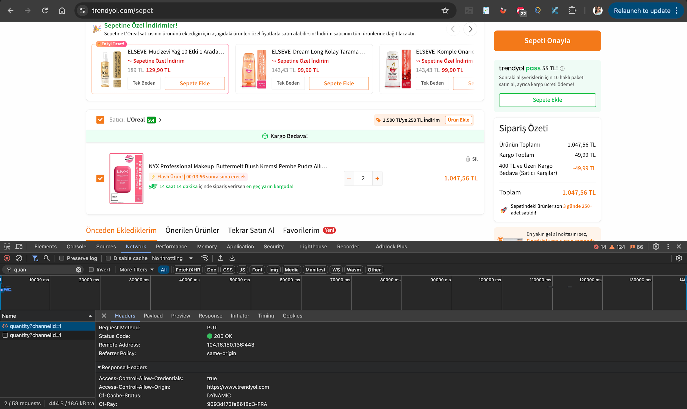

Task 05
Cart Quantity Update Request
PUT request used for cart item quantity update operation.
Request Summary
Analysis Note
Successful update flow was confirmed with 200 OK status.
Visual Evidence

Task 05
PUT request used for cart item quantity update operation.
Successful update flow was confirmed with 200 OK status.
